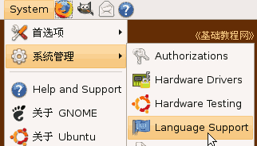
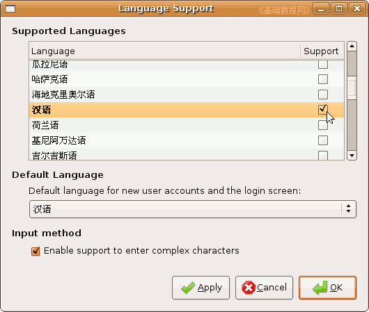
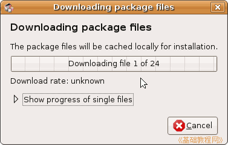
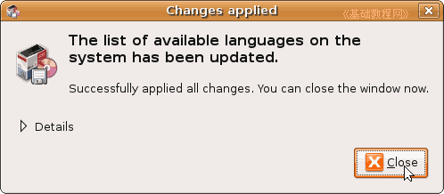

Ubuntu安装基础教程
作者：Teliute 来源：基础教程网
十、设置中文 返回目录 下一课刚装好的系统，菜单还是英文的，也不能输入中文，这一节我们来进行中文设置，下面我们来看一个练 习；
1、设置中文
1）点上面板的系统菜单“System－系统管理－Language Support”语言支持命令，出来一个语言面板；

2）在面板中拖动右边的滚动条，找到“汉语”打勾选中，下边的也是列表框里也是“汉语”，底下的勾也选中了；

3）点右下角绿色的“OK”按钮，按提示正确输入密码后，开始下载中文语言包，提前要把连网和源设置好；

4）下载完成后安装语言包，最后提示完成，点“Close”按钮关闭，重启动机子后菜单就都是汉语了，
右上角的输入法里面也有了中文输入法；

本节学习了Ubuntu中设置中文的基本方法，如果你成功地完成了练习，请继续学习下一课内容；本教程由86团学校TeliuTe制作|著作权所有，商业用途请与作者联系
基础教程网：http://teliute.org/
美丽的校园……
转载和引用本站内容，请保留版权信息和本站链接。